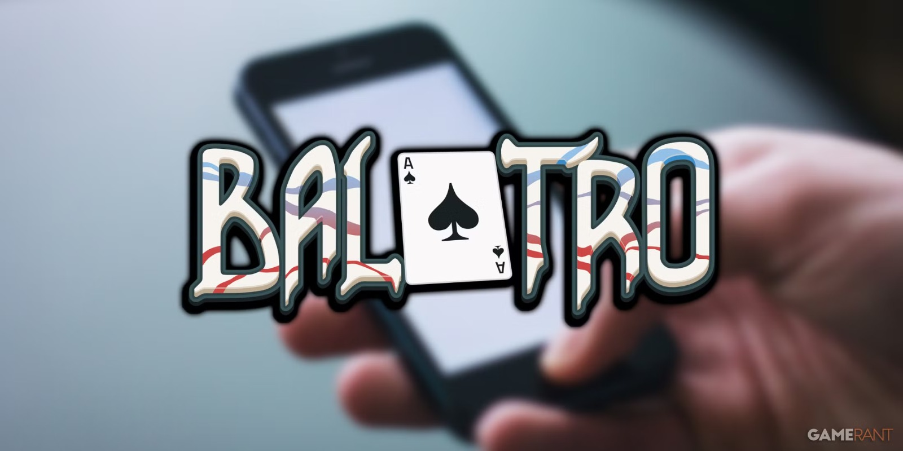
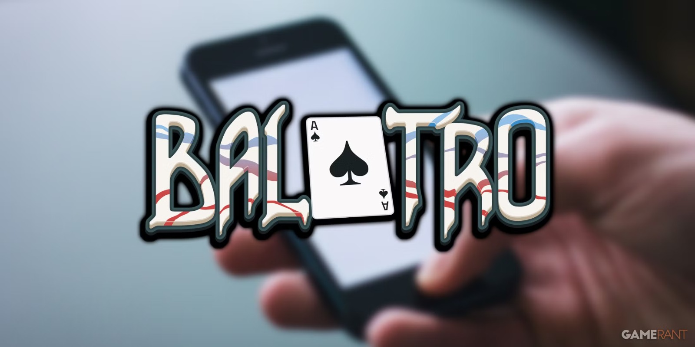
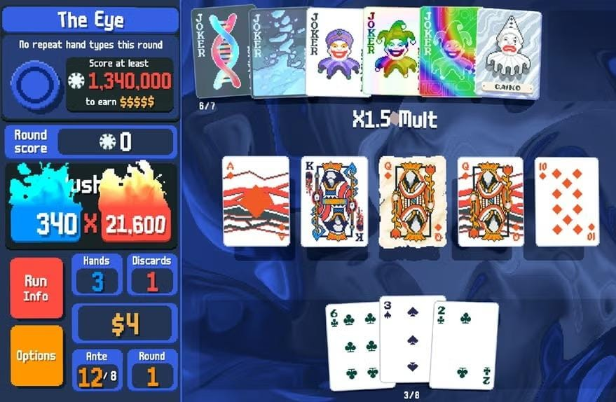
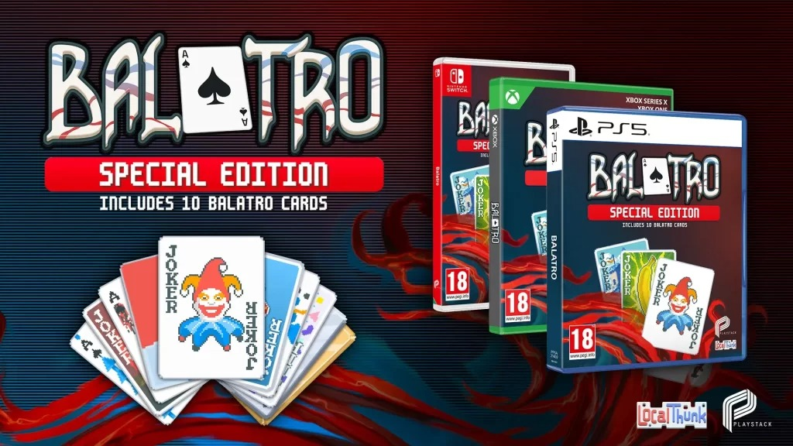

¿Qué es Balatro?
Probablemente haz escuchado este curioso nombre y te habrás preguntado que es, bueno: Balatro es un juego de cartas infinito de tipo roguelike que combina la construcción de mazos con elementos del póker.
Probablemente haz escuchado este curioso nombre y te habrás preguntado que es, bueno: Balatro es un juego de cartas infinito de tipo roguelike que combina la construcción de mazos con elementos del póker.
El objetivo principal es superar una serie de "ciegas" o apuestas, utilizando manos de póker para generar puntuaciones altas y fichas. El juego introduce comodines y otros elementos que permiten crear sinergias y combos únicos, haciendo que cada partida sea diferente y desafiante.!
El origen de este juego es interesante, ya que su creador solo quería hacer un juego de cartas que pensó que solo jugaría su familia, pero lo perfecciono y agrego tanta variedad a este que el juego se volvió popular.
Además de su re jugabilidad, variedad y una que otra colaboración con otros juegos, Balatro es mayor conocido por su comunidad, la cual crea mods, streamers populares lo dan a conocer, gente recomienda el juego entre sus amigos, etc.
Balatro esta disponible para muchas plataformas, por ejemplo: Nintendo switch, Ps4 y Ps5, celular y por supuesto pc.
